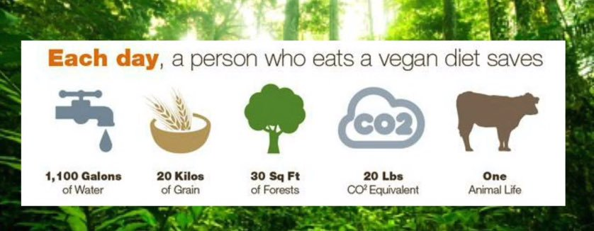

What is Vegan?

The term "vegan" was coined in 1944 by a small group of vegetarians who broke away from the Leicester Vegetarian Society to form the Vegan Society. These people chose not to consume dairy, eggs or any other products of animal origin, in addition to not eating meat like the vegetarians. Therefore, they felt the need to form a society that better represented their views. The term vegan was chosen by combining the first and last letters of the word vegetarian. Veganism was originally defined as "the principle of emancipation of animals from exploitation by man." In 1979, the Vegan Society became a registered charity and updated that definition. Veganism is currently defined as a way of living that attempts to exclude all forms of animal exploitation and cruelty, be it for food, clothing or any other purpose.
Reason Why People Decide to Eat this Way
For Ethical Reason

Ethical vegans strongly believe that all creatures have the right to life and freedom. Therefore, they oppose ending a conscious being's life simply to consume its flesh, drink its milk or wear its skin, especially because alternatives are available. Ethical vegans are also opposed to the psychological and physical stress that animals may endure as a result of modern farming practices. For instance, ethical vegans deplore the small pens and cages in which many animals live and often rarely leave between birth and slaughter. What's more, many vegans speak openly against farming industry practices, such as the grinding of live male chicks by the egg industry or the force-feeding of ducks and geese for the foie gras industry. Ethical vegans demonstrate their opposition by spending their money on products that do not contribute to sustaining the animal agriculture industry.
For environment
People may also choose to avoid meat and other animal products because of the environmental impact of animal agriculture. A 2010 UN report argues that these products generally require more resources and cause higher greenhouse emissions than plant-based options (17). For instance, animal agriculture contributes to 65% of the total amount of nitrous oxide emissions. It also comprises 35–40% of global methane emissions and 9% of global carbon dioxide emissions (18). Nitrous oxide, methane and carbon dioxide are considered the three principal greenhouse gasses involved in air pollution and climate change. Furthermore, animal agriculture tends to be a water-intensive process. Between 550 and 5,200 gallons (1,700 and 19,550 liters) of water are needed to produce 1 pound (0.5 kg) of beef (19, 20). This is up to 43 times more water than is needed to produce the same amount of cereal grain (20). Animal agriculture can alsonb lead to deforestation when forested areas are converted into areas intended for grazing or growing animal feed crops. This habitat destruction is thought to contribute to the extinction of various animal species (18, 21).